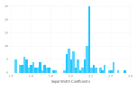
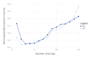

FuzzyCRegression.jl manual
This package implements the heterogeneous effects estimator from Lewis, Melcangi, Pilossoph, and Toner-Rodgers (2022) in Julia.
Fuzzy C-Regression estimator
Fuzzy C-Regression (FCR) is a method for estimating heterogeneous effects in settings with grouped patterns of unobserved heterogeneity. It extends the "Fuzzy C-Means" clustering algorithm to regression settings.
FCR can be used to estimate "grouped fixed effects" (a constant term for each group) as well as heterogeneous coefficients.
In panel settings, each unit belongs to the same group over time, meaning that separate coefficients are estimated for each group-time pair.
FCR objective function
Consider a linear model with grouped heterogeneity:
\[y = \sum_{g=1}^G\mu_{g} \theta_{g}X+\varepsilon\]
where $X$ are covariates (which could simply be a constant), $\theta_{g}$ represent group-specific coefficients for groups $g=1,\ldots,G$, and $\mu_{g}$ represent group weights which sum to 1. FCR is concerned with jointly estimating $\theta$ and $\mu$ for each group.
The FCR objective function takes the form:
\[L^{FCR}_m\left(\theta,\mu\right)=\mathbb{E}\left[\sum_{g=1}^{G}\mu_{g}^{m}\left\Vert y-\theta_g X\right\Vert ^{2}\right]\]
\[m > 1\]
is a regularization parameter governing the "fuzziness" of the FCR clusters, where group membership becomes binary as $m \rightarrow 1^+$. The weights are defined as
\[\mu_{g}\left(y,X;\theta,m\right)=\left(\sum_{h=1}^{G}\frac{\left\Vert y-\theta_g X\right\Vert ^{2/\left(m-1\right)}}{\left\Vert y-\theta_h X\right\Vert ^{2/\left(m-1\right)}}\right)^{-1} \text{ for } g=1,\ldots,G\]
Combing these two equations, we can write the FCR objective as a continuous function of only the group-specific errors $||y-\theta_gX||$:
\[J^{FCR}\left(\theta\right)=\mathbb{E}\left[\left(\sum_{g=1}^{G}\left\Vert y-\theta_g X\right\Vert ^{-2/\left(m-1\right)}\right)^{1-m}\right]\]
Thus, for fixed $m$, the FCR function is differentiable and can be written as a standard GMM problem.
Useful properties
Fast: FCR can be solved in a single step through standard non-linear minimization. This makes it substantially faster than previous approaches, which require iteration over all possible groupings of units.
Customizable: Choosing the fuzzy tuning parameter $m$ allows FCR to better accommodate the uncertainty of group membership in realistic datasets, where noise means that cluster membership cannot be ascertained with certainty. Moreover, it means that FCR can recover the full distribution of effects when heterogeneity is not fully discrete.
Inference: Since FCR is a GMM problem, it's asymptotic properties follow from standard theory and provide analytic standard errors.
Package installation
FuzzyCRegressions.jl can be installed using:
Pkg.add("FuzzyCRegression")This adds the latest version of the package and its dependencies, which include Optim.jl for minimization and ForwardDiff.jl for automatic differentiation.
Fitting the FCR model
There are two ways to fit an FCR model, depending on whether the data is stored as a DataFrame or as a set of arrays.
If the dataset is stored as a DataFrame, the model can be fit using fit(df,y,X,G,m,...), where the variables are referenced by their column names. G specifies the number of groups and m sets the regularization parameter, where group membership becomes binary as $m \rightarrow 1^+$ (tips for selecting these options are discussed below). For example, using the iris dataset from RDatasets:
using FuzzyCRegression, RDatasets
iris = dataset("datasets", "iris")
fcr_model = fit(df=iris, y=["SepalLength"], X=["SepalWidth","PetalWidth"], G=3, m=1.5)
summarize(fcr_model)
────────────────────────────────────────────────────────────────────────────────────────────
Estimate Std. Error t value Pr(>|t|) Lower 95% Upper 95%
────────────────────────────────────────────────────────────────────────────────────────────
SepalWidth (g=1) -1.85059 0.914888 -2.02275 0.0448874 -3.65842 -0.0427603
SepalWidth (g=2) -1.89972 0.581725 -3.26568 0.00135507 -3.04922 -0.750229
SepalWidth (g=3) 0.867675 2.8992 0.299281 0.765143 -4.86118 6.59653
SepalLength (g=1) 1.5167 0.397579 3.81484 0.00019913 0.73108 2.30232
SepalLength (g=2) 1.70667 0.338777 5.03774 1.34499e-6 1.03724 2.3761
SepalLength (g=3) 0.412295 1.4735 0.279807 0.780014 -2.49936 3.32395
────────────────────────────────────────────────────────────────────────────────────────────An advantage of this approach is that the estimated coefficients in the regression output are labeled by variable name.
Alternatively, the data can be passed directly as arrays:
fcr_model = fit(y=iris.SepalLength, X=[iris.SepalWidth iris.PetalWidth], G=3, m=1.5)The arguments for fitting the model are:
df: name of dataframe (if missing, data must be passed as arrays)y: column name or array holding values of the dependent variableX: a list of column names or a matrix holding values of the independent variable(s) with heterogeneous coefficients (defaults to a constant)Z: a list of column names or a matrix holding values of the independent variable(s) with homogeneous coefficientsG: number of groupsm: regularization parameter (greater than 1), where group assignment becomes binary as $m \rightarrow 1$unit: column name or array with unit identifier (if panel structure)time: column name or array with time indicators (if panel structure)startvals: number of starting values for the minimization routine (default = 10)cores: number of parallel workers (default = 1)
Methods applied to fitted models
The package provides several methods that can be applied to fitted models. The names are similar to those in GLM.jl. Full documentation for these methods can be found here.
aic: Akaike's Information Criterionbic: Bayesian Information Criterioncoef: estimates of the coefficients in the modelconfint: confidence intervals for coefficientsdistribution: distribution of coefficients using group weightspredict: obtain predicted values of the dependent variable from the fitted model, using modal group membershipresiduals: vector of residuals from the fitted model, using modal group membershipstderror: standard errors of the coefficientssummarize: summarize model resultsvcov: variance-covariance matrix of the coefficient estimates
For example, to plot the distribution of coefficients on SepalWidth from the fitted model above:
SepalWidth_coefs = distribution(fcr_model,"SepalWidth")
using Gadfly
plot(SepalWidth_coefs, Geom.hist)
Choosing $G$
The package provides several data-driven approaches for choosing the number of groups. In particular, the aic, bic, and hqc methods calculate information criteria that trade off the fit of the model against the number of parameters.
For example, continuing with the iris dataset, we plot the AIC and BIC for $G=1$ to $G=15$. The minimum of these plots indicates the optimal group number according to these criteria.
using FuzzyCRegression, Gadfly
#calculate the 3 criteriors for G=1 to G=15
IC = zeros(15,3)
for g = 1:15
fcr_model = fit(...)
IC[g,1] = bic(fcr_model)
IC[g,1] = bic(fcr_model)
QC[g,1] = hqc(fcr_model)
end
IC_norm = IC./sqrt(sum(IC.^2,1))
plot(x=1:15, y=IC_norm, Geom.point, Geom.line)